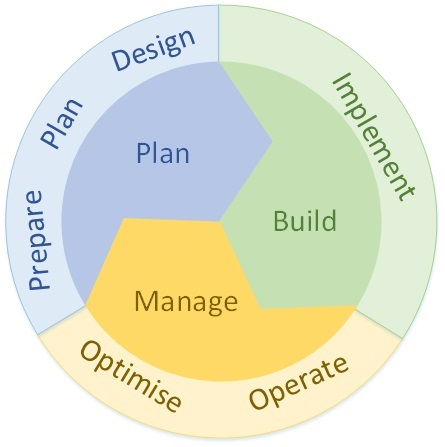

Existe una amplia variedad de Metodologias para la gestión de Servicios en TI que principalmenbte son estandares o modelos de buenas practicas para el desarrollo de un proyecto.
A continuación una guia de algunas metodologias que se emplean para el desarrollo de un proyecto, que sirve de base como modelo de acuerdo al enfoque que pueda darse.
PPDIOO
PPDIOO es la metodologia de cisco para definir las actividades mínimas requeridas, por tecnología y complejidad de red, que permitan asesorar de la mejor forma posible a los clientes; implementando una nueva red para su uso interno, o bien la sustitución o mejora de una ya existente.
A los ciclos de vida se les suele denominar SDLC (Systems Development Life Cycles) y no debe confundirse con el protocolo que usa las mismas siglas.
Es secuencial porque separa claramente diferentes etapas durante el ciclo de vida.
PPDIOO Enlace de información.
https://online.visual-paradigm.com/es/diagrams/features/process-map-designer/cisco-ppdioo-network-cycle/ITIL
ITIL es un conjunto de conceptos y mejores prácticas referentes a la gestión de servicios TI (tecnologías de la información), y describe detalladamente un extenso conjunto de funciones y procesos ideados para ayudar a las organizaciones a lograr calidad y eficiencia en las operaciones de TI.
ITIL® 4 incorpora un nuevo modelo de gestión basado en 4 dimensiones:Organización y Gente, Información y Tecnología; Partners y Proveedores & Flujos de Valor y Procesos.
ITIL Enlace de información.
ISO27000
Es un conjunto de estándares internacionales sobre la Seguridad de la Información. La familia ISO 27000 contiene un conjunto de buenas prácticas para el establecimiento, implementación, mantenimiento y mejora de Sistemas de Gestión de la Seguridad de la Información.
ISO27000 Enlace de información.
ISO20000
La norma ISO 20000 es un estándar de calidad generado por la ISO y se utiliza para la certificación de los servicios de gestión y soporte TI. Se trata de una actualización de la norma BS 15000 que ha logrado reorganizar los contenidos para alinearlos con todas las normas de carácter internacional.
Incluye los siguientes requerimientos de servicios gestionados en TI de calidad aceptable: Requerimientos del Sistema de gestión del servicio, Diseño y transición de servicios nuevos o modificados, Procesos de entrega de servicios, Procesos de relaciones, Procesos de resolución & Procesos de control.
ISO_20000 Enlace de información.
SCRUM
Scrum es un proceso en el que se aplican de manera regular un conjunto de buenas prácticas para trabajar colaborativamente, en equipo, y obtener el mejor resultado posible de un proyecto.
Scrum se basa en el desarrollo incremental, la priorización de los requisitos, el control empírico del proyecto, la potenciación del equipo, la sistematización de la colaboración y la comunicación & El timeboxing de las actividades.
SCRUM Enlace de información.
ISO22301
ISO 22301 es una norma internacional de gestión de continuidad de negocio. Esta ha sido creada en respuesta a la fuerte demanda internacional que obtuvo la norma británica original, BS 25999-2 y otras normas.
La norma está organizada según la siguiente estructura: Ámbito de aplicación, Referencias normativas, Términos y definiciones, Contexto de la organización, iderazgo, Planificación, Soporte, Operación, Evaluación del desempeño & Mejora.
ISO_22301 Enlace de información.
COBIT 2019
COBIT es un marco referencia que permite el control de todos los aspectos técnicos y riesgos de negocios, habilitando el desarrollo de políticas claras y buenas prácticas para el control de TIC a lo largo de las organizaciones, estableciendo los criterios técnicos a implementar o controlar para el manejo de la seguridad informática, promoviendo una cultura de gestión, seguridad y calidad para afrontar las demandas de su sector, mejorando sus procesos con la garantía del aumento de la seguridad de sus sistemas de información y de las comunicaciones.
Se establecen los siguientes tres principios básicos para un marco de gobierno: Primero debe basarse en un modelo conceptual, segundo debe ser abierto y flexible y finalmente debe adaptarse a los estándares relevantes , marcos y regulaciones relevantes.
COBIT Enlace de información.